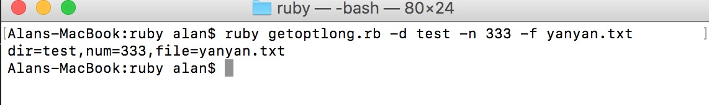

1 GetoptLong
GetoptLong主要是用来处理命令行参数。
示例代码：
require 'getoptlong'
opts=GetoptLong.new(
['--dir','-d',GetoptLong::REQUIRED_ARGUMENT],
['--num','-n',GetoptLong::OPTIONAL_ARGUMENT],
['--file','-f',GetoptLong::OPTIONAL_ARGUMENT]
)
dir="tmp"
num=10
test_file="test.txt"
def display_usage
p "Sample usage:"
p "ruby getoptlong.rb -d tmp -n 3 -f 'test.txt'"
end
#parse arguments
opts.each do |opt,arg|
case opt
when '--dir'
dir=arg
when '--num'
num=arg.to_i
when '--file'
test_file=arg
end
end
# print all the arguments
puts "dir=#{dir},num=#{num},file=#{test_file}"
命令行调用：
ruby getoptlong.rb -d test -n 333 -f yanyan.txt
执行结果：
